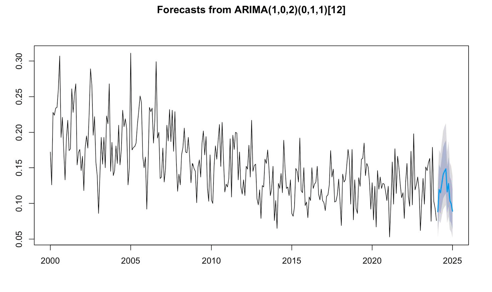

Forecast Aviation Gasoline CO2 emissions
 The objective of this project was to analyze Aviation CO2 emissions time series dataset (Source: Energy Information Administration USA) and identify a suitable model for predicting future behavior. We conducted a thorough descriptive analysis to understand the defining characteristics of the series, which informed our modelling strategy. Various models were evaluated based on parameter estimation and residual analysis, considering each model’s coefficient significance, error metrics, and diagnostic checks.
Through this comprehensive analysis, the SARIMA (1,0,2) x (0,1,1) model emerged as the best-fitting model. This model was selected due to its significant coefficients, its ability to effectively capture the underlying trends, its favourable accuracy scores and a high adjusted R-squared value that indicates strong explanatory power without overfitting.
Using the SARIMA (1,0,2) x (0,1,1) model, we forecasted the next 12 observations in the series. These forecasts reflect the downward trend observed in the historical data and provide valuable insights into potential future behaviour. However, it is important to note that actual future observations may vary.
Overall, this project successfully demonstrated each phase of time series analysis, from descriptive statistics to model selection and forecasting, justifying each methodological choice and presenting the results effectively.
The objective of this project was to analyze Aviation CO2 emissions time series dataset (Source: Energy Information Administration USA) and identify a suitable model for predicting future behavior. We conducted a thorough descriptive analysis to understand the defining characteristics of the series, which informed our modelling strategy. Various models were evaluated based on parameter estimation and residual analysis, considering each model’s coefficient significance, error metrics, and diagnostic checks.
Through this comprehensive analysis, the SARIMA (1,0,2) x (0,1,1) model emerged as the best-fitting model. This model was selected due to its significant coefficients, its ability to effectively capture the underlying trends, its favourable accuracy scores and a high adjusted R-squared value that indicates strong explanatory power without overfitting.
Using the SARIMA (1,0,2) x (0,1,1) model, we forecasted the next 12 observations in the series. These forecasts reflect the downward trend observed in the historical data and provide valuable insights into potential future behaviour. However, it is important to note that actual future observations may vary.
Overall, this project successfully demonstrated each phase of time series analysis, from descriptive statistics to model selection and forecasting, justifying each methodological choice and presenting the results effectively.
In the below image you can see the emissions forecasts from Feb, 2024 to Jan 2025 obtained from the SARIMA (1,0,2) x (0,1,1) model.

Go to Project!